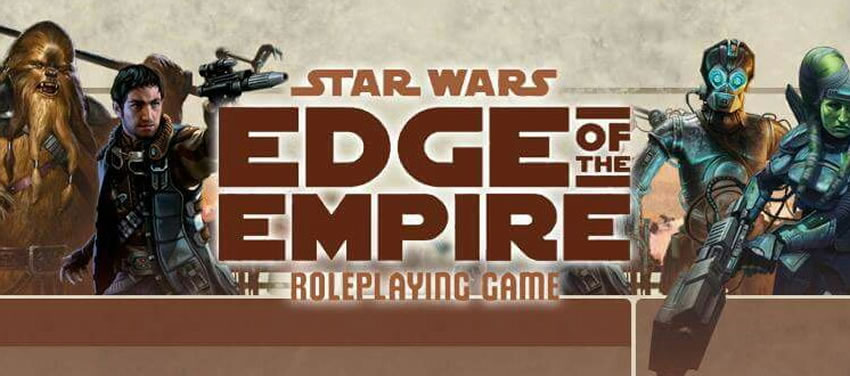

|  |
Why a Player's Guide? |
|---|
One of the major strengths of Dungeons & Dragons is the Player's Handbook, which allows each player to possess their own copy of the rules that govern their character, without requiring them to invest in the larger set of information that is only needed by the DM. Star Wars, like most other RPGs that I have run into, uses an all-encompassing Core Rulebook (CRB for short). While I don't expect any player to read the CRB from cover-to-cover, you will need to have a basic grasp of game mechanics in order to build your character and begin playing. This guide is not intended to fully replace the CRB, but it should be a helpful starting point. This guide will also contain any House Rules that are relevant to our campaign. |
Read This First |
Read This First - This link is a quick introduction to Fantasy Flight Games' Star Wars RPG system, geared toward explaining what makes it different from Dungeons & Dragons (and other d20-based games). Since everyone in our group has played D&D, I didn't bother doing a full write-up on how roleplaying games work in general. Anyone who played in my previous campaign should skip this part, unless you're looking for a refresher on the basics. |
House Rules |
Fantasy Flight Games makes 3 different thematic CRBs for Star Wars, each with its own line of expansion books. Edge of the Empire focuses on life in the Outer Rim of the galaxy, and allows players to be a variety of fringe-type characters such as bounty hunters, smugglers, and colonists (Imagine Firefly with a Star Wars backdrop). Age of Rebellion is all about being a member of the Rebel Alliance and fighting against the Empire. Force and Destiny is all about playing the part of a Force User. I want players to be able to pull their character creation options from all 3 games, so I have had to tweak a few of the rules. Please read this section, even if you have played before. Character Creation House Rules: 1. Players may choose any playable Species and Career from any of the 3 games, including options from the CRBs and the expansion books. 2. All characters must choose an Obligation, per the rules in Edge of the Empire. The starting Obligation score is based on the number of players in the campaign. Assuming 5 players, starting score will be 10. Extra Obligation may be taken in exchange for additional starting XP or Credits, also covered in the Edge of the Empire rules. 3. Any character who starts as a Force Sensitive character (or who becomes Force Sensitive later on) must choose a Morality, per the rules in Force and Destiny. Starting Morality score is 50. You may NOT use the rule for adjusting Morality to gain starting XP or Credits. However, if you have taken on extra Obligation, you may choose to adjust your Morality score accordingly. 4. Any character with an Age of Rebellion career takes a Duty score, per the rules of that game. You may NOT use the rule for spending Duty to gain starting XP or Credits. However, if you have taken on extra Obligation, you MUST drop your Duty score accordingly. 5. Please write a background story. It doesn't have to be a book, but please give me at least a few paragraphs about your character. If you purchase any Restricted or especially rare items as starting gear, you should talk about how they came into your possession. The background story will be worth some extra XP. Other House Rules: 1. The 3 games use the same core system with a few exceptions. When not otherwise covered by a house rule, the newer rules set (Force and Destiny) will generally win out where there is a disagreement, but common sense must also be applied. This is especially true when it comes to using the Force, since Force and Destiny was designed around a party of Force Users. 2. I will allow players to use Dark Force Points, even if they have no Destiny Points left to spend. However, this comes at a cost. Rules as Written (RAW) state that Dark Force Points can be used by spending a Destiny Point, taking 1 Strain per Dark Force Point used, and a conflict score is generated. When there are no Destiny Points available, this is not possible. Rather than cutting the player off from the Force for that turn, the house rule is: If no Destiny Points can be spent, the GM will gain a temporary Destiny Point (gets removed from play after use, rather than going to the players), plus the Strain cost is doubled, and the resulting conflict score is doubled. |
Character Creation Cheat Sheet |
|---|
| Choose a character sheet: Edge of the Empire Character Sheet (Works well if you're keeping notes separately) Alternate Character and Vehicle Sheet (Printer-friendly, incorporates all 3 games) Extended 4-page Character Sheet (Very thorough, incorporates all 3 games) Extended 4-page Character Sheet Version 2 (Less Talent, More Force Power) |
Follow the steps below to create your character: 1. Choose an Obligation 2. Choose a Species 3. Choose a Career
and Specialization 4. Invest Starting XP
Each Species comes with some Starting XP, which can be spent on advancing your
character before you begin to play. Use the following chart as a reference
for spending Starting XP: 5. Calculate Derived Attributes 6. Choose a Motivation 7. Purchase Starting Gear 8. Write a Backstory |